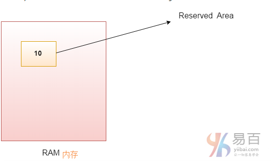
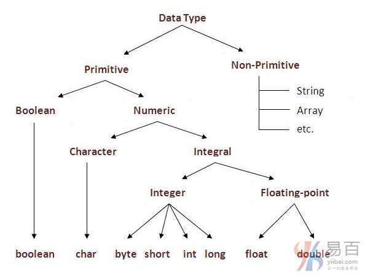

☰ 目录
07 Java变量和数据类型
变量是一个内存位置的名称。 java中有三种类型的变量：局部变量，实例变量和静态变量。java中有两种类型的数据类型：原始数据类型和非原始数据类型。
变量
变量是在内存中分配的保留区域的名称。换句话说，它是内存位置的名称。这意味着它的值可以改变。

int data=50;// 这里 data 就是一个变量。
变量类型
java中有三种类型的变量：
- 局部变量
- 实例变量
- 静态变量

1)局部变量
在方法内声明的变量称为局部变量。
2)实例变量
在类中声明但在方法外部的变量称为实例变量。但它不被声明为静态(未加static修辞符)。
3)静态变量
被声明为static的变量(加static修辞符)称为静态变量。它不能是局部的。
我们将在下一章中详细学习这些变量。
下面看几个示例来了解java中的变量类型。
class A{
int data=50;//实例变量
static int m=100;// 静态变量
void method(){
int n=90;//局部变量
}
}//end of class
Java数据类型
数据类型表示要存储在变量中的不同类型的值。 在Java中，有两种类型的数据类型：
- 原始数据类型
- 非原始数据类型

| 数据类型 | 默认值 | 默认长度 |
|---|---|---|
| boolean | false | 1 bit |
| char | '\u0000' |
2 byte |
| byte | 0 | 1 byte |
| short | 0 | 2 byte |
| int | 0 | 4 byte |
| long | 0L | 8 byte |
| float | 0.0f | 4 byte |
| double | 0.0d | 8 byte |
为什么char在java中使用2个字节以及什么是\u0000？
这是因为java使用Unicode系统而非ASCII码系统编码。 \u0000是Unicode系统的最低范围。要了解有关Unicode的详细说明，请访问下一页。
Java变量示例：两个数字相加
class Simple{
public static void main(String[] args){
int a = 10;
int b = 10;
int c = a + b;
System.out.println(c);
}
}
输出结果：
20
Java变量示例：加宽
class Simple{
public static void main(String[] args){
int a=10;
float f=a;
System.out.println(a);
System.out.println(f);
}
}
输出结果：
10
10.0
Java变量示例：缩小(转换)
class Simple{
public static void main(String[] args){
float f=10.5f;
//int a=f; //Compile time error
int a=(int)f; /// 范围缩小，必须显示强转
System.out.println(f);
System.out.println(a);
}
}
输出结果：
10.5
10
Java变量示例：溢出
class Simple{
public static void main(String[] args){
//Overflow
int a=130;
byte b=(byte)a;
System.out.println(a);
System.out.println(b);
}
}
输出结果：
130
-126
Java变量示例：较低类型相加
class Simple{
public static void main(String[] args){
byte a=10;
byte b=10;
//byte c=a+b; //Compile Time Error: because a+b=20 will be int
byte c=(byte)(a+b); // must with two()
System.out.println(c);
}
}
输出结果：
20